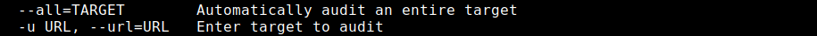

XSSer
GitHub: https://github.com/epsylon/xsser
XSSer provides both a command line and GTK GUI interface.
An interesting command-line switch is --heuristic. The purpose of this switch is to identify characters that are filtered by the application.
OPTIONS:
• --heuristic → identify characters that are filtered by the application
• For filter bypass or evasion:
◇ Hexadecimal encoding (--Hex)
◇ Decimal (--Dec)
◇ String.FromCharCode()
◇ Unescape() (--Une)




List of potential XSS payloads provided by the tool’s author: https://github.com/epsylon/xsser/blob/master/core/fuzzing/vectors.py
Installation:
root@kali:/# git clone https://github.com/epsylon/xsser.git
root@kali:/# cd xsser
root@kali:/# sudo python setup.py install
root@kali:/# ./xsser -h
root@kali:/# ./xsser --gtk (for gui)
root@kali:/# cd xsser
root@kali:/# sudo python setup.py install
root@kali:/# ./xsser -h
root@kali:/# ./xsser --gtk (for gui)
example
root@kali:/# ./xsser -u https://www.boscoitalia.it/ -g ?s=XSS -auto-set=100